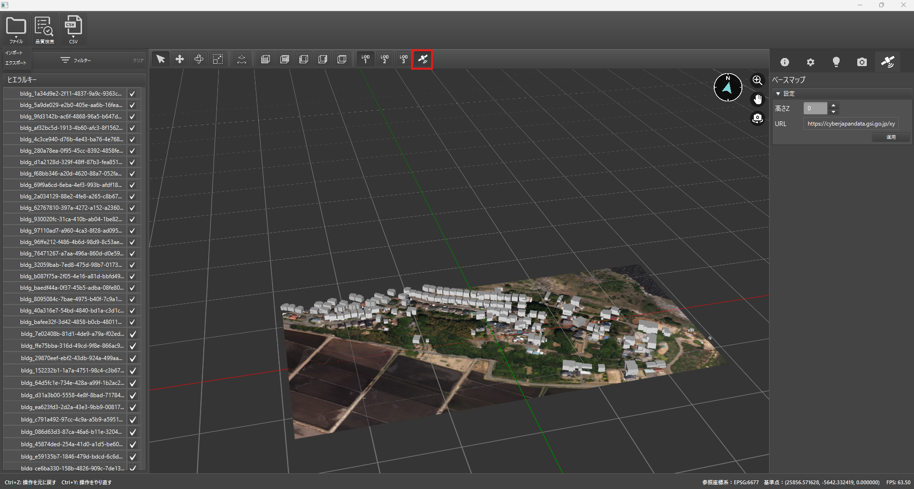
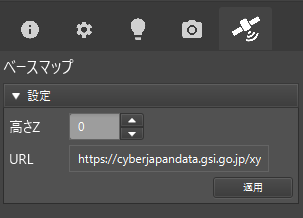

ベースマップの表示
このページでは、ベースマップ（背景地図）を3Dビューに重ねて表示する方法を解説します。ベースマップを使用することで、建物や道路などの3D都市モデルを地理的に位置付けた状態で確認できます。
1. ベースマップのON/OFF

- 3D都市モデルをインポートした状態で、画面上部の 「ベースマップ切替」ボタン をクリックします。
- ボタンを押すごとに、ベースマップの表示と非表示が切り替わります。
- ONになっている場合は、3Dビューに背景として地図タイルが読み込まれます。
- OFFの場合、ベースマップなしの表示に戻ります。
Warning
べースマップの表示にはインターネット接続が必要です。
2. 表示高さの調整

ベースマップの高さはデフォルトで0mとして描画されます。実際のモデルの高さと合わない場合は、画面右側の 「ベースマップ」タブ で数値を変更できます。
- 「ベースマップ」タブを開く
- 「高さ」 フィールドで、標高をメートル単位で入力
- 「適用」ボタンを押すと、高さが更新されます